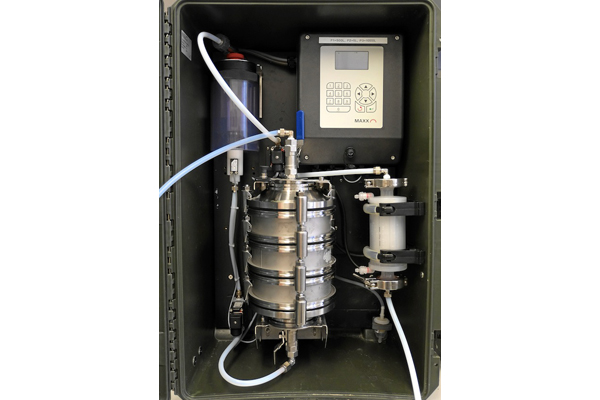

LVSPE
The LVSPE is an automated high volume sampling system for the representative and cost-effective collection of water samples up to 1000 liter per sampling. The new device makes it possible to sample large volumes of water on-site by way of solid phase extraction and after separation of suspended particulate matter. The system aims to provide sample volumes that are appropriate for multiple chemical-analytical and bioanalytical purposes (e.g., target-, suspect-, or non-target screening analysis, and performing of in vitro or in vivo bioassays or effect-directed analysis). T
Main functions and advantages:
- 12 V battery or 230 V mains-operated, automated sampling device and method for simple, inexpensive and representative sampling of large amounts of water over several days
- No time-consuming transport of large amounts of water to the laboratory
- Vacuum system for the representative sampling of water
- Chamber to store and to pressurize the water sample
- 3-way switch valve to connect to filtration and solid-phase extraction cartridges
- Filtration cartridges with glass fiber depth filters (<0.5 µm) to separate suspended particulate matter
- Solid phase extraction cartridges with a multi-component sorbents for the extraction of compounds with a broad range of physic-chemical properties from water samples
References:
Schulze T, Ahel M, Ahlheim J, Aït-Aïssa S, Brion F, Di Paolo C, et al. Assessment of a novel device for onsite integrative large-volume solid phase extraction of water samples to enable a comprehensive chemical and effect-based analysis. Science of the Total Environment 2017; DOI:10.1016/j.scitotenv.2016.12.140.Brack W, Ait-Aissa S, Burgess RM, Busch W, Creusot N, Di Paolo C, et al. Effect-directed analysis supporting monitoring of aquatic environments — An in-depth overview. Science of The Total Environment 2016; DOI:10.1016/j.scitotenv.2015.11.102.

